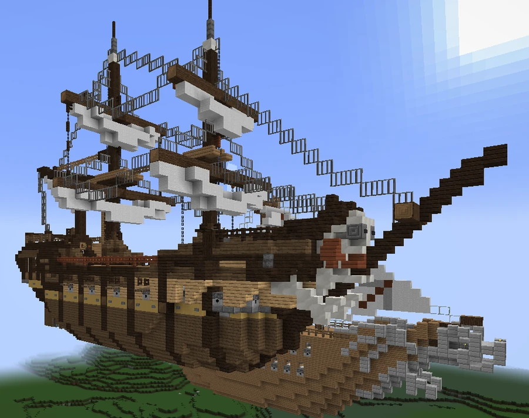

BVS Supremecy
A v10 battleship whose name is spelled Supremecy. The story associated with the community continuation distinguishes it from an earlier BVS Supremacy.
Name and service
The BVS Supremecy is the v10 battleship with the misspelled name. The story developed around that spelling distinguishes it from the correctly spelled BVS Supremacy and places the original Supremacy in an earlier era, lost to time.
According to that narrative, the West Bro Corp Company, a colonial-era version of Bro Corp, reused the name for its new flagship because its officials did not want to invent another. Under H.D. Locke, the Supremecy suffered damage in battles against pirates and other threats to the company's vital shipping lanes. It was eventually retired in one piece and turned into a tourist attraction in the capital of Brottowa, disparagingly described as an expensive visit to an old ship.



Connection with the community continuation
Puhelias used the spelling error in v10 as a starting point for developing the history of the actual BVS Supremacy and the West Bro Corp Company in her continuation presented as Broville v12. The comparison between the v10 and v12 ships was presented while still in development. This backstory belongs to that continuation's narrative, without retroactively establishing events in the v11 books.
See also
Sources and references
- v11.4.4 maps, signs, books and items World records
- BVS. "Supremecy" · Broville Wiki Community archive
Text adapted and expanded from BVS. "Supremecy" (contributors and history, revision 4763). Adapted text is available under CC BY-SA 3.0.